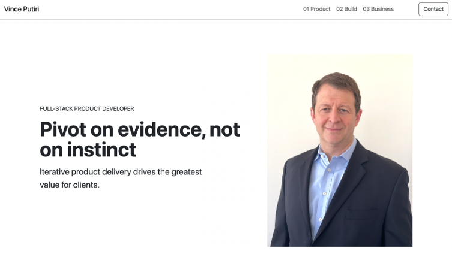

This site
HTML5 · CSS3 · ES modules · Bootstrap 5
CS5610 Project 1: a three-page personal homepage, deployed publicly, with an original interactive component.
Demonstrates responsive layout, a Bootstrap grid customized with a small stylesheet, and a vanilla JavaScript module that highlights one pipeline card and dims the others.
Decision: no framework and no build step, so the site stays a set of files anyone can read.